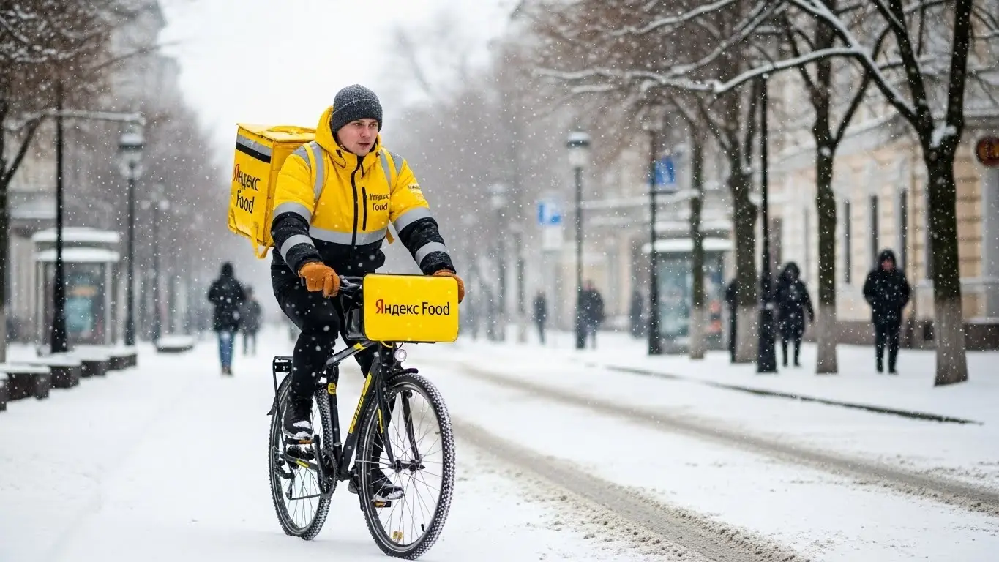

Работа курьером Яндекс Еды в Апрелевке 2025-2026: доход и условия
- Работа курьером Яндекс Еды в Апрелевке: для кого эта вакансия и что вы получите
- Сколько вы будете зарабатывать курьером в Апрелевке: калькулятор дохода и разбор выплат
- Реальный заработок курьера в Апрелевке: смены и месячный доход
- График работы и форматы занятости
- Требования к кандидату и документы
- Самозанятость, налоги и юридическая чистота
- Пошаговое оформление и первый выход на линию в Апрелевке
- Пешком, на вело или на авто: что выгоднее в Апрелевке
- Районы, маршруты и «топовые» зоны заказов в Апрелевке
- Безопасность, страховка, штрафы и оплата простоя
- Плюсы и возможные минусы работы курьером в Апрелевке
- Реальные истории и отзывы курьеров из Апрелевки
- Ответы на главные вопросы о работе курьером Яндекс Еды в Апрелевке
- Короткие ответы на главные вопросы
- Итоги и ваш следующий шаг
Все города
Думаешь податься в курьеры и ищешь инфу про работу в Яндекс Еде в Апрелевке? Наверняка в голове крутятся одни и те же вопросы: «Сколько я реально заработаю, катаясь по нашим улицам?», «Не убью ли я свой велик за пару месяцев?», «Что будет, если застряну в пробке на выезде из города?». Реклама обещает золотые горы и свободный график, но давай начистоту: работа курьером в Апрелевке — это не прогулка по парку. Это знание, где срезать путь, в какое время лучше не соваться в центр и как не прождать заказ полчаса у ресторана, теряя деньги.
Большинство новичков в Апрелевке сливаются в первый же месяц, потому что видят только верхушку айсберга — сумму за заказ в приложении. Но никто не говорит им про реальные расходы на бензин или обслуживание велосипеда, про налог для самозанятых, про то, как рейтинг влияет на количество заказов. Они не знают, почему в одном новом ЖК заказы сыпятся один за другим, а в частном секторе можно простоять час впустую. Чтобы избежать их ошибок, важно заранее изучить все детали. Полную сводку условий, калькулятор дохода и форму заявки можно найти на официальной странице работа курьером Яндекс Еда в Апрелевке. Без понимания этой «внутрянки» ты рискуешь не заработать, а разочароваться.
В этом гайде я без рекламной шелухи разберу всю кухню работы курьером Яндекс Еды именно в нашей Апрелевке. Мы посчитаем, сколько чистыми выходит у пешего, вело- и автокурьера с учетом местных реалий. Я покажу на карте, где находятся самые «рыбные» районы и в какие часы там пиковый спрос. Расскажу, как погода и сезоны влияют на доход, за что реально штрафуют и как этого избежать. Сравним, что выгоднее — возить еду или посылки. В общем, ты получишь полную картину из первых рук.
Меня зовут Алексей. Я сам не один год откатал курьером по Апрелевке, а сейчас держу свой небольшой таксопарк-партнёр и вижу всю систему изнутри. Я знаю, где вечные пробки, какие рестораны готовят дольше всех и какие ошибки совершает каждый второй новичок. Здесь не будет пустых обещаний — только факты, цифры и советы, которые сэкономят тебе время, нервы и деньги. В общем, пристегивайся, сейчас всё разложу по полочкам.
Чтобы тебе было проще сориентироваться, вот короткий гид по ключевым темам статьи.
Что ты точно узнаешь из этого гида по Апрелевке
В этой статье ты ТОЧНО узнаешь:
- Сколько реально можно заработать в Апрелевке за смену, если работать пешком, на велосипеде или на авто?
- В каких районах Апрелевки больше всего заказов и как ловить пиковые часы с высокими коэффициентами?
- Что выгоднее для Апрелевки — ходить пешком, ездить на велосипеде или работать на своей машине?
- Насколько сложно оформить самозанятость и как платить налоги, чтобы всё было легально?
- За что реально могут оштрафовать или заблокировать в Яндекс Про и как этого избежать?
- Что такое оплата простоя и как она защищает доход, если заказов в смене мало?
А если тебе некогда читать всю статью — переходи сразу к заключению, где ты найдёшь короткие ответы на все эти вопросы и указания, в каких разделах искать подробности.
А для наглядности — основные цифры по работе в Апрелевке.
Работа в Яндекс Еде: Апрелевка в цифрах
Доход в час
350–500 ₽
В часы высокого спроса и с бонусами
За смену 8 часов
2 800–3 800 ₽
Зависит от погоды и числа заказов в районе
Оптимальный формат
Вело / Пеший
Для компактных районов Апрелевки
Чаевые от заказов
10–15%
Дополнительно к основному доходу
Работа курьером Яндекс Еды в Апрелевке: для кого эта вакансия и что вы получите
Кому подойдёт эта работа в Апрелевке
Давай начистоту: эта работа не для всех, но для многих она — настоящая находка. В первую очередь, это отличный вариант для студентов. График можно подстроить под лекции, а деньги получать хоть каждый день — на жизнь и развлечения хватит. Если у тебя нет опыта работы, но есть желание зарабатывать, — это тоже твой шанс. Здесь не смотрят на диплом и прошлые заслуги, главное — твоя ответственность и расторопность.
Эта вакансия также отлично подходит в качестве подработки. Совмещать с основной занятостью проще простого: можно выходить на пару часов вечером или плотно поработать на выходных, чтобы закрыть кредит или накопить на отпуск. Для водителей на личном авто это возможность превратить свою машину в источник дохода, выполняя доставки по всему городу и окрестностям. В общем, если тебе важен свободный график, быстрые выплаты и понятные условия — ты по адресу.
Главные преимущества для жителей районов Центральный, ЖК Весна, микрорайон Победы
Главный плюс работы курьером в Апрелевке — её компактность. Тебе не придётся часами ехать до «денежной» зоны, потому что работать можно прямо у своего дома. Живёшь в Центральном микрорайоне? Отлично, тут полно кафе и магазинов, заказы будут всегда. Обосновался в новом ЖК «Весна»? Тоже хорошо, оттуда постоянно заказывают еду и продукты семьи с детьми.
Аналогичная ситуация и в микрорайоне Победы. Вместо того чтобы тратить время и деньги на дорогу до Москвы, ты просто выходишь из подъезда, включаешь приложение Яндекс Про и начинаешь принимать заказы. Это экономит и силы, и средства. Ты знаешь каждый двор, каждую тропинку, а значит, будешь доставлять заказы быстрее других и, как следствие, больше зарабатывать.
Краткое обещание по доходу и условиям
Теперь о главном — о деньгах. В Апрелевке активный курьер за смену 4–6 часов спокойно делает 2000–3500 рублей. Если работать на полную ставку, по 8–10 часов в день, то месячный доход может доходить до 70 000 – 90 000 рублей и выше, особенно если ты на машине и берёшь выгодные заказы. Важно понимать, что это не оклад, твой заработок зависит от тебя.
Условия работы простые и прозрачные. Во-первых, ежедневные выплаты на твою банковскую карту — отработал и сразу получил деньги. Во-вторых, абсолютная свобода в планировании графика: ты сам решаешь, когда и сколько работать. В-третьих, начать можно без какого-либо опыта. Тебя всему научат на коротком онлайн-инструктаже, выдадут фирменный термокороб или сумку, и можно выходить на линию.
Сколько вы будете зарабатывать курьером в Апрелевке: калькулятор дохода и разбор выплат
Из чего складывается доход курьера
Твой заработок — это не просто фиксированная ставка, а конструктор из нескольких частей. Во-первых, есть базовая оплата за каждый выполненный заказ. Во-вторых, к ней добавляется доплата за расстояние — чем дальше нести или везти, тем больше денег. В-третьих, в часы пик (обед, ужин, выходные) и в плохую погоду включаются повышающие коэффициенты. В это время стоимость каждого заказа может вырасти в полтора, а то и в два раза.
Кроме этого, есть персональные бонусы за выполнение определённого количества заказов в день или неделю. Не стоит забывать и про чаевые — благодарные клиенты часто оставляют их прямо в приложении, и вся эта сумма идёт тебе в карман. Важный момент: сервис оплачивает простой, если заказ долго готовят в ресторане, а на некоторых заказах возможна компенсация проезда на общественном транспорте. Всё это суммируется и составляет твой итоговый доход.
Как пользоваться калькулятором дохода
Чтобы прикинуть свой возможный заработок, не нужно гадать. На сайте есть специальный калькулятор, и пользоваться им элементарно. Сначала выбираешь свой город — Апрелевку. Затем указываешь, как планируешь доставлять: пешком, как велокурьер или на личном автомобиле.
После этого выставляешь, сколько часов в день и сколько дней в неделю ты готов работать. Например, 4 часа 5 дней в неделю как подработку или 8 часов 6 дней в неделю для полной занятости. Нажимаешь кнопку «Рассчитать», и система покажет тебе примерный диапазон твоего дневного и месячного дохода. Цифры там, конечно, ориентировочные, но они дают вполне реальное представление о том, на что можно рассчитывать.
Прикинь свой доход в Апрелевке
8 часов
5 дней
Примерный доход в месяц:
68 000 ₽
(около 3 400 ₽ в день)
Это ориентировочный расчёт. Реальный доход зависит от количества заказов, бонусов и повышающих коэффициентов в твоём районе.
Чтобы увидеть актуальные условия, требования и подать заявку, переходи на страницу работа курьером Яндекс Еда в твоём городе — там же найдёшь подробный FAQ и сможешь заполнить анкету.
Примеры расчёта для пешего, вело- и авто‑курьера в Апрелевке
Давай на конкретных примерах.
- Пеший курьер. Представь: ты студент и работаешь пешком по 4 часа после учёбы в центре Апрелевки, в районе улицы Августовская. Здесь много кафе, заказы короткие, но их много. За вечер ты можешь сделать 8–10 доставок. С учётом бонусов и возможных чаевых твой доход за смену составит около 1500–2000 рублей.
- Велокурьер. Ты решил совмещать приятное с полезным и доставляешь на велосипеде. Работаешь по 6 часов в день, курсируя между спальными районами, например, от ЖК «Весна» до станции. Ты быстрее пешего, поэтому успеваешь сделать 12–15 заказов. Твой дневной заработок будет в районе 2500–3500 рублей.
- Автокурьер. Ты работаешь на своей машине по 8–9 часов, беря заказы по всей Апрелевке и в ближайший пригород — Селятино, Мартемьяново. Ты можешь брать крупные заказы из супермаркетов (Яндекс Еда) или посылки (Яндекс Доставка), работать в любую погоду и выполнять дорогие «дальние» доставки. В хороший день, особенно в выходной, твой доход может превысить 5000–6000 рублей.
Реальный заработок курьера в Апрелевке: смены и месячный доход
Теперь к самому интересному — к деньгам. Разговоры про свободный график и работу на себя ничего не стоят, если в кармане пусто. В Апрелевке, конечно, не московские заработки, но и расходы другие, и суеты меньше. Цифры, которые я назову, — это не реклама, а реальность, которую мои ребята видят в отчётах в приложении «Яндекс Про» каждый день. Это отличная работа, чтобы начать без опыта. Заработок курьера здесь напрямую зависит от трёх вещей: на чём ты работаешь, сколько часов в день и, самое главное, насколько с головой подходишь к делу.
Диапазон дохода для подработки и полной занятости
Если тебе нужна подработка на 2–4 часа в день, чтобы закрыть кредит или просто иметь деньги на свои хотелки, расклад такой. Пеший курьер или велокурьер за короткую смену в Апрелевке спокойно делает 800–1500 рублей. Обычно это вечерние часы после основной работы или учёбы. На своём авто за то же время выйдет больше, где-то 1500–2500 рублей, но тут нужно вычитать бензин. В месяц такая подработка приносит 20–35 тысяч рублей, не напрягаясь.
При полной занятости, когда ты работаешь по 8–10 часов 5 дней в неделю, цифры совсем другие. Пеший или велокурьер в месяц может зарабатывать 50 000 – 75 000 рублей. Водитель-курьер на своей машине выходит на доход в 80 000 – 120 000 рублей «грязными». Из этой суммы нужно вычесть топливо и мелкий ремонт, но даже с учётом этого остаётся приличная зарплата для нашего города.
Это стабильные деньги, которые можно получать с первого дня. А благодаря системе ежедневных выплат в «Яндекс Про» не нужно ждать конца месяца — заработанное можно выводить на карту почти сразу.

Как район, время суток и погода влияют на доход
Запомни простое правило: твой заработок — это не только плата за заказ, но и коэффициенты. А они растут там, где много заказов и мало курьеров. В Апрелевке самые «хлебные» места — это центр в районе станции, улицы Августовская и Ленина, где много кафе, откуда идут заказы «Яндекс Еды». Также хороший спрос в новых ЖК, например, в «Парк Апрель» или «Весне», — там много молодых семей, которые постоянно заказывают еду и продукты.
Самые прибыльные часы — обеденный пик (с 12:00 до 15:00) и вечерний (с 18:00 до 21:00), а также все выходные и праздничные дни. В это время на карте в «Яндекс Про» появляются «фиолетовые зоны» — это зоны повышенного спроса с высокими коэффициентами.
Но главный друг курьера — это плохая погода. Как только начинается дождь, снегопад или сильный мороз, большинство сидит дома, а заказы летят один за другим. Коэффициенты взлетают, а клиенты становятся щедрее на чаевые. Если не боишься промокнуть или замёрзнуть и у тебя есть хороший термокороб, чтобы сохранить еду горячей, за пару часов в непогоду можно сделать кассу как за половину обычного дня.
Советы по увеличению заработка от опытных курьеров
Чтобы зарабатывать больше, не обязательно работать сутками. Нужно работать умнее. Во-первых, всегда планируй смены заранее через «Яндекс Про». Выбирай плановые слоты в пиковые часы — так у тебя будет приоритет в распределении заказов. Во-вторых, не жди заказов дома. Перемещайся в зоны, которые горят фиолетовым на карте спроса, — это верный признак того, что там сейчас есть деньги.
Если у тебя есть и велосипед, и машина, комбинируй. В хорошую погоду днём катайся на велосипеде по центру — сэкономишь на бензине и не будешь стоять в пробках на переездах. А вечером или в плохую погоду садись за руль — сможешь брать дальние заказы в частный сектор или соседние посёлки, куда пешком не дойти. И всегда будь вежлив с клиентами. Хороший рейтинг и пара добрых слов часто превращаются в чаевые, которые за месяц складываются в приятную сумму.
Вот тебе пример из жизни. Один из моих водителей, парень лет тридцати, работает на основной работе до пяти вечера. После этого он берёт слот на 4 часа, с 18:00 до 22:00. Он не катается по всему городу, а держится в районе улицы Дубки и новых ЖК. В прошлую дождливую пятницу он за свою короткую смену сделал 12 заказов «Яндекс Еды» и заработал почти 3500 рублей чистыми, потому что почти на все заказы был повышенный коэффициент.
В итоге, твой реальный заработок в Апрелевке зависит от твоей стратегии. Можно просто выходить на линию и ждать заказов, а можно анализировать спрос, ловить пиковые часы и непогоду, чтобы за меньшее время получать больше денег. Мой совет: относись к этой работе как к своему делу. Большинство курьеров — самозанятые, то есть сами себе начальники. Такой подход помогает, и тогда доход тебя не разочарует.
График работы и форматы занятости
Одно из главных преимуществ работы курьером — свободный график. И это не просто слова из объявления. Ты действительно сам решаешь, когда и сколько работать. Хочешь — выходи на пару часов вечером, хочешь — работай полную неделю. Никто не будет стоять над душой с претензиями за опоздание или просьбу уйти пораньше. Всё управление сменами происходит через приложение «Яндекс Про», что даёт огромную гибкость.
Подработка после учёбы или основной работы
Этот формат идеально подходит тем, кому нужен дополнительный доход без жёстких обязательств. Например, студент местного колледжа может выходить на 3-4 часа после пар. Берёт велосипед, выбирает слот с 17:00 до 21:00 и катается по центру Апрелевки, доставляя заказы «Яндекс Еды». За неделю, работая 4-5 вечеров, он спокойно зарабатывает 7-10 тысяч рублей, которых хватает на личные расходы.
Другой пример — мужчина, который работает в офисе с 9 до 18. У него есть машина и цель — быстрее закрыть автокредит. Он выходит на линию в пятницу вечером и работает почти весь день в субботу. Его фокус — крупные заказы из супермаркетов по тарифу «Яндекс Доставки» и доставка в частный сектор или на дачи, куда пешком или на велосипеде добираться долго.
За такие выходные он привозит домой дополнительные 10-15 тысяч рублей. Это реальные сценарии, которые позволяют совмещать работу курьером с чем угодно.
Полная занятость: как выглядит типичный день курьера
Если рассматривать доставку как основную работу, то день строится вокруг пиков спроса. Типичный день автокурьера в Апрелевке выглядит примерно так. Он выходит на линию около 10 утра, чтобы успеть на утренние заказы из магазинов и доставки документов. С 12:00 до 15:00 — обеденный пик, самый плотный поток заказов «Яндекс Еды» из кафе и ресторанов. В это время лучше находиться в центральной части города.
После 15:00 наступает небольшое затишье. Это время можно использовать для обеда, отдыха или выполнения заказов «Яндекс Доставки» — например, посылок между людьми. А с 18:00 начинается вечерний пик, который длится до 21:00-22:00. Это самое прибыльное время: много заказов еды, высокие коэффициенты. Курьер чередует короткие доставки по городу с более длинными в пригород. В конце смены он видит в приложении итоговый заработок за день. Благодаря ежедневным выплатам, эти деньги можно сразу вывести на карту.
Как планировать слоты и выходы через приложение «Яндекс Про»
«Яндекс Про» — твой главный рабочий инструмент. В нём ты не только видишь заказы, но и планируешь своё время. Есть два формата выхода на линию: свободный выход и плановые слоты. Свободный — это когда ты просто нажимаешь кнопку «На линию» в любое время. Но я настоятельно рекомендую использовать слоты. Это запланированные смены, которые ты бронируешь заранее на определённое время и в определённой зоне города.
Планирование слотов даёт тебе два ключевых преимущества. Во-первых, приоритет при распределении заказов: система в первую очередь обеспечивает работой тех, кто вышел на плановую смену. Во-вторых, часто на такие слоты действует гарантированный минимальный доход. Даже если заказов будет мало, сервис доплатит тебе до определённой суммы.
Чтобы всё работало как надо, критически важно не опаздывать на начало слота. Приехал в свою зону за 5-10 минут, нажал кнопку — и твой рейтинг и активность будут в порядке, что напрямую влияет на стабильность заказов.
Вот тебе ещё один пример. Новичок, студент, поначалу просто выходил на линию, когда было свободное время. Заказов было мало, заработок нестабильный. Я ему посоветовал начать планировать слоты на выходные. Он забронировал себе смены на вечер пятницы, субботы и воскресенья в центральной зоне. В итоге за те же 12 часов, что он работал раньше вразнобой, его доход вырос почти вдвое, потому что он постоянно получал заказы и бонусы за выполненные цели.
В общем, гибкость графика — это твой инструмент, которым нужно научиться пользоваться. «Яндекс Про» даёт все возможности для планирования. Относись к слотам серьёзно, не опаздывай, и тогда свободный график будет приносить тебе стабильный и предсказуемый доход.
Требования к кандидату и документы
Многих новичков пугает, что для работы курьером нужны особые навыки или кипа бумаг. На деле всё гораздо проще. Тебе не понадобится диплом или опыт работы в логистике — начать можно и без опыта. Главное — быть ответственным, пунктуальным и готовым двигаться. Давай разберём по пунктам, какие условия и требования существуют на самом деле.
Возраст, гражданство и базовые условия
Начнём с основ. Чтобы стать курьером-партнёром Яндекс Еды, нужно соответствовать трём базовым требованиям. Во-первых, возраст — строго с 18 лет. Никаких исключений, так как работа связана с материальной ответственностью и финансовыми операциями.
Во-вторых, гражданство. Сервис сотрудничает с гражданами Российской Федерации, а также стран Евразийского экономического союза (ЕАЭС). К ним относятся Беларусь, Казахстан, Армения и Киргизия. Если у тебя паспорт одной из этих стран, проблем с оформлением не будет.
В-третьих, физическая форма. Никто не требует нормативов мастера спорта, но нужно быть готовым к активной работе. Пешему курьеру предстоит много ходить, велокурьеру — крутить педали по несколько часов. Для курьера на своем авто главное — уверенно управлять машиной и иметь действующие права категории «B». По сути, это оплачиваемый фитнес, который помогает держать себя в тонусе.
Какие документы нужны для работы курьером
Чтобы оформление прошло быстро и прозрачно, понадобится стандартный набор документов. Советую подготовить их заранее. Вот что нужно иметь под рукой:
- Паспорт. Основной документ для подтверждения твоей личности и возраста. Нужен будет оригинал для регистрации.
- ИНН (Идентификационный номер налогоплательщика). Он необходим для оформления статуса самозанятого и уплаты налогов. Если ты не помнишь свой номер или потерял свидетельство, его можно за пару минут узнать на сайте ФНС по паспортным данным.
- Именная банковская карта. На неё будут приходить твои заработанные деньги. Важно, чтобы карта была выпущена на твоё имя. Подойдёт карта любого российского банка.
- Медицинская книжка. Так как курьер доставляет продукты питания, медкнижка часто является обязательным требованием. Она подтверждает, что у тебя нет противопоказаний для работы с едой. Если её нет, лучше оформить — это несложно и показывает твою ответственность.
Как видишь, список короткий и понятный. Никаких сложных справок или рекомендательных писем не требуется.
Со скольки лет можно работать и какие есть альтернативы для подростков
Давай сразу по-честному: в Яндекс Еду берут строго с 18 лет. Вопрос, можно ли работать с 16 лет, возникает часто, но ответ на него однозначный. Причина проста: работа курьером — это не просто прогулка с сумкой. Это полная материальная ответственность за заказы, которые могут стоить несколько тысяч рублей, а также работа с деньгами и банковскими картами. Кроме того, для официального сотрудничества с сервисом нужно оформить статус самозанятого, что по закону доступно в полной мере именно с 18 лет.
Если тебе 16 или 17 и ты ищешь подработку, не стоит отчаиваться. Есть другие варианты, где требования к возрасту ниже. Например, можно попробовать устроиться промоутером, раздавать листовки, помогать в местных кафе на неполный день или поискать простые задачи на фриланс-биржах. Это поможет накопить первый опыт и заработать карманные деньги, а как только исполнится 18 — добро пожаловать в доставку.
Был у меня парень, который хотел устроиться сразу после школы. Переживал, что не соберёт все документы. Оказалось, что у него не было на руках свидетельства ИНН. Он уже расстроился, думал, придётся идти в налоговую, стоять в очередях. Я ему показал, как зайти на сайт nalog.ru и за минуту найти свой номер по паспорту. В итоге он зарегистрировался в тот же день. Вся «сложная» бюрократия заняла пять минут.
В общем, требования к кандидатам и документам вполне стандартные. Главное — быть совершеннолетним, иметь гражданство РФ или ЕАЭС и подготовить базовый пакет документов. Это не сложнее, чем оформить сим-карту или банковскую карту.
Самозанятость, налоги и юридическая чистота
Многих пугают слова «налоги», «самозанятость», «официально». Кажется, что это сложно, долго и невыгодно. На самом деле, в случае с курьерами всё устроено максимально просто и прозрачно. Работа через самозанятость — это твоя защита и уверенность в завтрашнем дне. Давай разберёмся, как это работает и почему это лучше, чем получать зарплату «в конверте».
Почему курьеры Яндекс Еды работают как самозанятые
Сотрудничество с Яндекс Едой строится на партнёрских отношениях, а самый удобный формат для этого — самозанятость, или налог на профессиональный доход (НПД). Это специальный налоговый режим для тех, кто работает на себя. Для курьера это идеальный вариант по нескольким причинам.
Во-первых, это официальный доход. Все заработанные тобой деньги — «белые». Это значит, ты можешь без проблем взять кредит, получить визу или подтвердить свой заработок для любых других целей. Во-вторых, никакой сложной бухгалтерии: не нужно нанимать бухгалтера или сдавать декларации, всё происходит автоматически. В-третьих, это легальность и безопасность. Ты работаешь в рамках закона, платишь налоги и можешь не опасаться проверок или штрафов от налоговой.
По сути, самозанятость даёт тебе свободу фрилансера и социальные гарантии официально работающего человека. Ты сам себе начальник, но при этом твой доход и все выплаты полностью легальны.
Как за 10 минут оформить самозанятость через «Мой налог»
Оформление статуса самозанятого занимает не больше 10 минут и делается прямо с телефона. Никуда ходить не нужно. Вот простая пошаговая инструкция:
- Скачай приложение «Мой налог» из Google Play или App Store. Это официальное приложение от Федеральной налоговой службы.
- Открой приложение и выбери способ регистрации. Самый быстрый — «По паспорту РФ».
- Отсканируй паспорт. Просто наведи камеру телефона на главный разворот паспорта. Приложение само распознает все данные.
- Сделай селфи. Приложение попросит тебя сфотографироваться, чтобы подтвердить личность. Это быстрая и простая процедура.
- Подтверди регистрацию. Проверь данные, выбери свой регион (например, Московская область для Апрелевки) и подтверди создание профиля.
Вот и всё. С этого момента ты официально самозанятый. Весь процесс интуитивно понятен и не требует специальных знаний. Приложение «Яндекс Про» также поможет тебе пройти эти шаги, если возникнут трудности.
Сколько и как платить налоги
Теперь самое главное — сколько и как платить налог. Ставка для самозанятого курьера, который сотрудничает с юридическим лицом (Яндекс Едой), составляет 6% от дохода. Никаких других скрытых платежей или комиссий нет.
Процесс уплаты налога устроен максимально просто. Тебе не нужно ничего считать вручную: приложение «Яндекс Про» автоматически передаёт данные о твоём заработке в «Мой налог». Каждый месяц, до 12-го числа, налоговая присылает уведомление с уже рассчитанной суммой налога за предыдущий месяц. Оплатить его нужно до 28-го числа. Сделать это можно прямо в приложении, привязав банковскую карту, или по квитанции.
Работать официально и платить 6% — это гораздо проще и безопаснее, чем получать «серую» зарплату. Неофициальная подработка — это всегда риск. Тебя могут обмануть с выплатами, а в случае проблем ты никак не защищён. Официальный доход через самозанятость даёт стабильность, спокойствие и открывает больше финансовых возможностей.
Один из моих водителей-курьеров долгое время работал неофициально в другой конторе. Боялся налогов как огня. Когда перешёл к нам и я объяснил ему про самозанятость, он сначала сомневался. Но через пару месяцев пришёл довольный: «Я и не думал, что всё так просто. Раз в месяц приходит смс, нажал кнопку — оплатил. Зато теперь сплю спокойно. А недавно мне ипотеку одобрили, потому что я смог доход подтвердить».
В итоге, самозанятость — это не проблема, а удобный инструмент. Она делает твою работу полностью легальной и прозрачной, не требуя от тебя никаких усилий. Это современный подход к работе, который даёт свободу и финансовую защищённость.
Пошаговое оформление и первый выход на линию в Апрелевке
Многие думают, что стать курьером — это долго и муторно, с поездками в офис и бумажной волокитой. На деле всё гораздо проще и быстрее: весь процесс от заявки до первого заработка занимает от силы один-два дня, проходит полностью онлайн и не требует опыта. Система отлажена так, чтобы ты не терял время, а как можно скорее начал получать доход. Главное — иметь под рукой смартфон и необходимые документы.
Шаг 1–2: анкета и онлайн‑обучение
Всё начинается с простой анкеты на сайте. Там нет хитрых вопросов, как на собеседовании, — только базовая информация: ФИО, номер телефона, город Апрелевка, гражданство. После этого система попросит загрузить фото паспорта для проверки данных. Не пугайся, это стандартная процедура для оформления, всё конфиденциально и нужно для заключения договора.
Как только твои данные проверят, откроется доступ к короткому онлайн-обучению. Это не лекции в институте, а несколько коротких видеороликов и тестов прямо в приложении «Яндекс Про». Тебе расскажут, как принимать заказы, общаться с клиентами и ресторанами, как пользоваться термосумкой и что делать в нестандартных ситуациях. Тесты простые, на понимание материала. Прошёл их — и ты практически готов к работе.
Шаг 3: получение сумки и доступа к заказам в Апрелевке
Следующий этап — получить главный рабочий инструмент, фирменную термосумку (её ещё называют термокороб). Без неё система не даст доступ к заказам из ресторанов и продуктовых магазинов. В Апрелевке нет огромного курьерского центра, поэтому сумку обычно можно получить несколькими способами: заказать доставку на дом, забрать в ближайшем партнёрском пункте или у партнёра-таксопарка.
Все доступные адреса и варианты получения появятся прямо в приложении «Яндекс Про» после того, как ты пройдёшь обучение. Выбираешь самый удобный для себя способ, получаешь сумку, активируешь её в приложении (обычно нужно просто сфотографировать), и твой профиль становится полностью активным. С этого момента ты можешь видеть и принимать заказы в Апрелевке.
Шаг 4: первый слот и первый доход
Как только профиль активен, можно выходить на линию. Ты заходишь в «Яндекс Про», выбираешь на карте Апрелевки удобную для себя зону и свободный временной интервал — слот. Новичкам я советую начинать со своего района, где знаешь каждую улицу и двор. Так будет спокойнее, и ты быстрее сориентируешься.
Выбрав слот, нажимаешь кнопку «На линию», и приложение начинает предлагать тебе заказы. Первый заказ может прийти уже через пару минут. Выполняешь его, следом второй, третий — и вот ты уже видишь на балансе первые заработанные деньги. Благодаря системе ежедневных выплат, свой первый доход ты можешь перевести на карту уже в конце смены. То есть, сегодня заполнил анкету, завтра вышел на линию — и вечером уже получил живые деньги.
Из практики: парень из Апрелевки, студент, решил подработать. Утром в понедельник заполнил анкету, к обеду прошёл обучение. Заказал доставку сумки, которую ему привезли во вторник утром. В тот же день он вышел на свой первый 4-часовой слот в районе улицы Августовская. Работал пешком, брал заказы из местных кафе. За вечер спокойно сделал 8 заказов и заработал около 1400 рублей, которые сразу же вывел на карту. Никаких сложностей, всё по шагам в приложении.
В общем, процесс регистрации и старта максимально упрощён и автоматизирован. От тебя требуется только внимательно следовать инструкциям в приложении, и уже через день ты сможешь получить свой первый доход. Мой совет: не затягивай с получением сумки — это единственный шаг, который отделяет тебя от реальных заказов и денег.
Пешком, на вело или на авто: что выгоднее в Апрелевке
Выбор транспорта — одно из ключевых решений, которое напрямую влияет на твой заработок, усталость и количество выполненных заказов. В Апрелевке, как и в любом другом городе, у каждого способа передвижения есть свои плюсы и минусы. Важно трезво оценить свои возможности и особенности города, чтобы выбрать оптимальный вариант. Здесь нет универсального ответа, всё зависит от твоих целей: хочешь ли ты просто подработать рядом с домом или выжимать максимум из смены.
Пеший курьер: для центра и плотной застройки в Апрелевке
Если ты живёшь в центре Апрелевки или рядом с ним, работа пешим курьером — отличный вариант для старта. Основная масса кафе, пиццерий и небольших магазинов сосредоточена в районе железнодорожной станции, улиц Ленина и Августовской. Заказы здесь часто идут на короткие расстояния, в пределах 1-2 километров. Пешком ты легко доставишь заказ в соседний дом или через дорогу, не тратя время на поиск парковки.
Этот формат идеален для подработки: не требует никаких вложений, кроме удобной обуви. Ты работаешь в своём темпе, совмещая доставку с прогулкой. Конечно, на сверхдоходы рассчитывать не стоит, так как скорость и дальность ограничены. Но для стабильного дополнительного заработка в 2-3 тысячи рублей за смену в центральной части Апрелевки — это вполне рабочий вариант.
Велокурьер: быстрые доставки между спальными районами
Велосипед — это золотая середина между скоростью и затратами. В Апрелевке он идеально подходит для работы в спальных районах и для связи между ними, например, между микрорайоном Победы и ЖК «Весна». На велосипеде ты легко преодолеешь 3-5 километров, объедешь местные пробки у переезда и срежешь путь через парки, куда на машине не сунешься.
Велосипед даёт тебе серьёзное преимущество в скорости перед пешим курьером, позволяя выполнять больше заказов в час и, соответственно, больше зарабатывать. Плюс, это отличная физическая нагрузка — по сути, оплачиваемый фитнес. Если у тебя есть велосипед и ты не боишься крутить педали, этот вариант позволит тебе получать доход ощутимо больше, чем пешком, особенно в часы пик.
Водитель‑курьер: заказы по всему городу и пригороду Селятино, Калининец, дачные посёлки
Автомобиль — это инструмент для максимального заработка. На машине тебе доступны абсолютно все заказы: от доставки пиццы в соседний квартал до крупных закупок из супермаркетов в дальние концы города и пригород. Особенно выгодно работать на авто в плохую погоду — дождь, снег, мороз. В это время количество заказов резко возрастает, коэффициенты на карте становятся «фиолетовыми», а пеших и велокурьеров на линии почти нет.
На машине ты можешь брать дорогие заказы на большие расстояния, например, в Селятино, Калининец или в многочисленные дачные посёлки вдоль Киевского шоссе. Это твой главный козырь. Конечно, есть расходы на бензин и амортизацию, но они с лихвой окупаются высоким доходом в пиковые часы и непогоду. Если у тебя есть машина, работа водителем-курьером в Апрелевке — самый прибыльный вариант.
Сравнение форматов доставки в Апрелевке
| Параметр | Пеший курьер | Велокурьер | Водитель-курьер |
|---|---|---|---|
| Зона работы | Центр, радиус 1-2 км | Спальные районы, радиус 3-5 км | Весь город и пригород |
| Средний доход в час | 250-400 ₽ | 400-600 ₽ | 600-1000+ ₽ (в пики) |
| Расходы | Практически нет | Обслуживание велосипеда | Бензин, амортизация, страховка |
| Плюсы | Простота, без вложений, полезно для здоровья | Скорость, маневренность, "оплачиваемый фитнес" | Высокий доход, комфорт, большие заказы, работа в любую погоду |
| Минусы | Низкая скорость, маленькая дальность, зависимость от погоды | Физическая нагрузка, зависимость от погоды, сезонность | Расходы на авто, пробки, поиск парковки |
В итоге, выбор транспорта в Апрелевке зависит от твоих амбиций. Для неспешной подработки в центре хватит и своих ног. Для более серьёзного дохода в жилых районах — велосипед будет в самый раз. А если хочешь зарабатывать по-максимуму и не зависеть от погоды, то автомобиль — твой лучший выбор. Мой совет: если есть машина, даже не думай — начинай на ней. Доход покроет все расходы и принесёт хорошую прибыль, особенно если ловить пиковые часы.
Районы, маршруты и «топовые» зоны заказов в Апрелевке
Чтобы в Апрелевке работа курьером приносила хороший доход, мало просто быстро ездить. Главное — понимать, где и когда тебя ждут заказы. Город небольшой, но со своими «рыбными местами». Если бездумно кататься от одного конца города до другого, сожжёшь топливо или силы, а заработаешь копейки. Правильная стратегия — это работать в зонах высокого спроса и грамотно планировать свои перемещения.
Где больше всего заказов: ТРЦ, бизнес‑центры и туристические места
В Апрелевке, как и в любом городе, есть точки притяжения, откуда поступает большинство заказов Яндекс Еды и Доставки. В первую очередь, это торговые центры и центральные улицы. Стабильный поток идёт из ТРЦ «Мелодия» на Августовской улице и из ТЦ «Апрель» — там расположены фуд-корты и магазины, активно работающие на доставку.
В обеденное время, с 12:00 до 15:00, и вечером, с 18:00 до 21:00, эти зоны на карте в «Яндекс Про» часто становятся фиолетовыми. Это означает повышенный спрос, а для тебя — повышенные коэффициенты к оплате заказа.
Много заказов также генерируют центральные улицы, где сосредоточены кафе и рестораны: Ленина, Августовская, Горького. Здесь всегда найдётся работа для пеших курьеров и велокурьеров, так как расстояния небольшие, а заказы поступают постоянно. В выходные спрос в этих зонах вырастает в разы, поэтому планировать смены на это время — верный способ увеличить свой заработок.
Работа в своём районе: примеры для популярных жилых кварталов
Одно из главных преимуществ работы курьером — возможность зарабатывать рядом с домом. Это идеальный вариант для подработки, который легко вписать в свой график. В Апрелевке это более чем реально: например, в новых жилых комплексах, таких как ЖК «Весна» или ЖК «Парк Апрель», живёт много молодых семей, которые регулярно заказывают доставку еды и продуктов. Здесь всегда есть заказы, особенно по вечерам и в выходные.
То же самое касается и старых, густонаселённых районов, например, в районе улиц Победы или Февральской. Здесь много небольших кафе, суши-баров и сетевых магазинов, откуда постоянно идут заказы. Работая в своём районе, ты экономишь время и деньги на дорогу до «горячей» зоны, лучше знаешь все дворы и подъезды, а значит, выполняешь доставки быстрее и получаешь больше.
Как выбирать зоны и слоты в «Яндекс Про», чтобы не мотаться впустую
Приложение «Яндекс Про» — твой главный инструмент планирования. На карте в реальном времени подсвечиваются зоны с повышенным спросом. Чем темнее фиолетовый цвет, тем выше коэффициент и твой итоговый заработок. Новичкам советую не гоняться за каждой такой зоной, а выбрать 1–2 удобных района и работать в них. Так ты не будешь тратить время на дорогу в незнакомые места.
Кроме того, в приложении есть плановые слоты — заранее забронированные часы работы в определённом районе. Выбирая слот, ты часто получаешь гарантированный минимальный доход, даже если заказов будет мало. Это отличная подстраховка, особенно в будни или в плохую погоду. Чтобы не мотаться впустую, всегда смотри на карту после завершения заказа. Если оказался в тихом районе, не спеши лететь в центр — возможно, через 5–10 минут заказ появится прямо рядом с тобой.
Из практики: один мой знакомый водитель-курьер поначалу пытался охватить весь город. За 8-часовую смену он проезжал по 150 км и привозил около 3000 рублей «грязными». Я посоветовал ему сосредоточиться на двух зонах: днём — центр вокруг ТРЦ «Мелодия», а вечером — его родной район ЖК «Весна». В итоге пробег сократился до 80–90 км, а заработок вырос до 4000–4500 рублей за ту же смену. Он просто перестал тратить время на пустые перегоны и всегда был там, где есть заказы.
В общем, ключ к успеху в Апрелевке — это не скорость, а умное планирование. Изучай карту спроса, выбирай удобные для себя районы и используй плановые слоты, чтобы доход был стабильным. Такие условия работы позволяют зарабатывать больше, а уставать меньше.
Безопасность, страховка, штрафы и оплата простоя
Работа курьером связана с определёнными правилами и рисками. Важно сразу понимать, как ты защищён, за что могут наказать и как система помогает не терять деньги. Яндекс предлагает прозрачные условия работы, которые защищают курьера, но и требуют от него ответственности. Это не просто «бегай и доставляй», а полноценная работа со своими требованиями и стандартами.
Бесплатная страховка на сменах и что она покрывает
Самое важное: как только ты принимаешь заказ и до момента его вручения, твоя жизнь и здоровье застрахованы. Это бесплатная программа страхования от партнёров Яндекса, которая действует автоматически на всех активных доставках. Тебе не нужно ничего дополнительно оформлять или платить.
Например, если велокурьер упал и сломал руку, страховка покроет расходы на лечение. Если водитель-курьер попал в ДТП (не по своей вине) и получил травму, он также может рассчитывать на компенсацию. Сумма покрытия доходит до 2 миллионов рублей. Это серьёзная поддержка, которая даёт уверенность, что в сложной ситуации ты не останешься с проблемой один на один. Конечно, лучше, чтобы это не пригодилось, но знать о такой защите необходимо.
Правила безопасности на дороге и при доставке
Здесь всё просто и логично, но повторить не лишнее. Твоя безопасность — главная задача. Пешим курьерам важно быть внимательными на дорогах, переходить улицу по переходам и носить светоотражающие элементы в тёмное время суток. Велокурьерам настоятельно рекомендую использовать шлем и фонари, соблюдать ПДД и быть предельно аккуратными на тротуарах и во дворах.
Для водителей-курьеров правила стандартные: не нарушать скоростной режим, не отвлекаться на телефон за рулём и аккуратно парковаться. В плохую погоду — дождь, снег, гололёд — снижай скорость и увеличивай дистанцию. Кроме дорожной безопасности, важна и аккуратность с самим заказом: держи термокороб ровно, чтобы ничего не пролилось и не помялось. При работе с наличными всегда внимательно проверяй купюры и сдачу.
Какие бывают штрафы и как их избежать
Система штрафов в Яндекс Еде — это в первую очередь инструмент контроля качества, а не способ наказать. Никто не будет штрафовать за случайное опоздание на 5 минут из-за пробки. Снижение рейтинга или штрафы применяются за систематические и серьёзные нарушения: грубость клиенту или сотруднику ресторана, порча заказа по своей вине, регулярные отмены уже принятых заказов без уважительной причины.
Чтобы этого избежать, достаточно соблюдать простые правила вежливости и ответственности. Если понимаешь, что опаздываешь, предупреди поддержку. Если с заказом что-то случилось, сразу же свяжись со специалистом через приложение и объясни ситуацию. Честность и своевременная коммуникация решают 99% проблем. Главное — не игнорировать стандарты сервиса, и тогда никаких штрафов не будет.
Что такое оплата простоя и как она защищает твой доход
Это одна из ключевых фишек, которая выгодно отличает работу в Яндекс Еде. Оплата простоя — по сути, гарантия минимального дохода. Она срабатывает, когда ты выходишь на плановый слот в определённой зоне, а заказов по какой-то причине очень мало. В этом случае система начисляет бонус, чтобы твой заработок в час не падал ниже установленной планки.
Например, ты взял слот с 10:00 до 14:00 с гарантией 400 рублей в час. За первые два часа заказов было мало, и ты заработал всего 500 рублей. Система увидит это и доначислит 300 рублей, чтобы твой доход соответствовал гарантированному минимуму (400 руб/час × 2 часа = 800 рублей). Это мощная защита от неудачных дней и низкого спроса. Ты можешь быть уверен, что твоё время на линии будет оплачено, и это позволяет точнее планировать свой доход.
Мой совет: пока не освоишься и не поймёшь, где и когда в Апрелевке больше всего заказов, старайся брать именно плановые слоты. Так ты будешь защищён от простоя и сможешь спокойно изучать город, не переживая за свой кошелёк. Это твой главный страховочный трос на старте.
Плюсы и возможные минусы работы курьером в Апрелевке
Любая работа — это баланс хорошего и не очень. Работа в доставке, например, в Яндекс Еде, — не исключение. Здесь нет начальника, который стоит над душой, но и нет оклада, который капает на карту, пока ты пьёшь кофе. Всё зависит от тебя. Поэтому важно взвесить все за и против, прежде чем брать в руки фирменную термосумку.
По моему опыту, в Апрелевке, как и в любом подмосковном городе, есть своя специфика. С одной стороны, город компактный, нет диких пробок, как в Москве. С другой — заказы от Яндекс Доставки могут быть и в частный сектор, и в новые ЖК на окраине, куда не всегда удобно добираться. Главное — понимать, на что идёшь.
Сильные стороны работы курьером в Апрелевке
Начнём с того, ради чего сюда вообще приходят. Первое и главное — это гибкий график. Ты сам решаешь, когда выходить на линию в приложении Яндекс Про. Хочешь — работай по 2-3 часа после основной работы или учёбы, хочешь — выходи на полный день. Никто не заставит тебя сидеть в слоте с 9 до 18, если тебе это неудобно.
Второй жирный плюс — ежедневные выплаты. Заработал сегодня — получил деньги сегодня или на следующий день. Это очень выручает, когда нужны деньги здесь и сейчас, а не через месяц. Третье — работа рядом с домом. В Апрелевке можно выбрать зону в своём районе, например, в микрорайоне Победы или около станции, и не тратить время и деньги на дорогу через весь город.
И, наконец, всё официально и безопасно. Ты работаешь как самозанятый, платишь небольшой налог, и у тебя идёт официальный доход. Плюс, на время смены действует страховка жизни и здоровья. Если что-то случится на заказе, ты не останешься один на один с проблемой. А круглосуточная поддержка в приложении Яндекс Про всегда поможет разобраться в сложной ситуации.
С какими сложностями чаще всего сталкиваются курьеры
Теперь о том, что может напрягать. Во-первых, физическая нагрузка. Если ты пеший или велокурьер, будь готов много ходить или крутить педали. Особенно это чувствуется в первые недели, пока не привыкнешь. Мой совет: начинай с коротких слотов по 3-4 часа и постепенно увеличивай нагрузку.
Во-вторых, погода. Дождь, снег, жара — работать придётся в любых условиях. С одной стороны, это минус. С другой — в плохую погоду всегда действуют повышенные коэффициенты в Яндекс Про, и заказов больше, потому что люди не хотят выходить из дома. Главное — правильно одеваться: непромокаемая куртка, удобная обувь и термобельё зимой решают 90% проблем.
Третья сложность — общение с разными людьми. Клиенты бывают всякие: кто-то поблагодарит и оставит чаевые, а кто-то будет недоволен, что ты опоздал на две минуты. Важно сохранять спокойствие, быть вежливым и не принимать негатив на свой счёт. И помни: если клиент ведёт себя неадекватно, всегда можно написать в поддержку сервиса. Ну и возможные простои тоже случаются, хотя в Апрелевке в часы пик (вечер, выходные) заказов обычно хватает.
Кому такая работа подходит, а кому лучше поискать другой формат
Давай по-честному. Работа курьером в Яндекс Еде идеально подходит, если ты активный, самостоятельный и ценишь свободу. Если ты студент, которому нужна подработка, или у тебя есть основная работа, и ты хочешь дополнительный доход по вечерам — это твой вариант. Также это отличный старт для тех, у кого нет опыта, но есть желание работать и зарабатывать. Если ты не боишься физической активности и переменчивой погоды, тебе здесь понравится.
С другой стороны, если ты ищешь стабильности с фиксированным окладом, чётким графиком с 9 до 18 и работой в тёплом офисе, то работа в доставке — это не твоё. Если тебя выводит из себя любая мелочь, ты не любишь общаться с незнакомыми людьми или для тебя критично важно работать в команде, лучше поискать что-то другое. Здесь ты сам себе начальник, а это подходит не всем.
Вот тебе реальный пример. У меня в парке был парень, Игорь, 30 лет. Ему срочно нужны были деньги на ремонт машины. Он начал работать автокурьером в Яндекс Доставке по вечерам. Сначала жаловался на усталость после основной работы, на то, что иногда приходится ждать заказ у ресторана. Но когда за первую неделю он вывел себе на карту почти 15 тысяч, работая по 4 часа в день, его отношение изменилось. Он понял, что доход напрямую зависит от его усилий, и это его мотивировало. В итоге машину он починил за месяц, но подработку не бросил — втянулся.
В общем, работа курьером в Яндексе — это не лёгкие деньги, а честный заработок для тех, кто готов двигаться. Главный плюс — свобода и прямая зависимость дохода от твоих действий. Главный минус — нужно быть готовым к физической работе и разным погодным условиям. Если тебя это не пугает, то всё получится.
Реальные истории и отзывы курьеров из Апрелевки
Теория — это хорошо, но лучше всего о работе говорят сами ребята, которые каждый день доставляют заказы Яндекс Еды в Апрелевке. Я собрал несколько коротких историй от разных курьеров, чтобы у тебя сложилась полная картина.
История студента Апрелевского филиала МФЮА, который совмещает учёбу и доставку
Кирилл, 19 лет, велокурьер:
«Я учусь на втором курсе, живу в новом ЖК на улице Ясной. Денег, что присылают родители, вечно не хватает. Решил попробовать себя в доставке от Яндекса. Купил недорогой велосипед и начал катать после пар, обычно с 16 до 20 часов, плюс один полный день на выходных. В основном работаю в своём районе и в центре, возле станции. Заказов в Яндекс Еде много из «Вкусно — и точка» и местных пиццерий. Поначалу было тяжело совмещать, уставал. Но потом втянулся, построил свой график. Теперь это для меня как оплачиваемый фитнес. В среднем за неделю выходит 7-9 тысяч рублей чистыми. Этих денег мне с головой хватает на свои расходы, кафе с девушкой и даже получается немного откладывать. Главное — не лениться и выходить на линию, особенно когда спрос высокий».
Опыт автокурьера, который выходит в пиковые часы
Сергей, 35 лет, водитель-курьер:
«У меня основная работа в офисе до шести вечера. Но сидеть дома перед телевизором — не моё, да и ипотека сама себя не заплатит. Поэтому три-четыре раза в неделю я выхожу на своей машине доставлять заказы Яндекс Доставки на вечерние слоты, с 19 до 23. Это самое золотое время: люди возвращаются с работы, заказывают ужины, продукты на вечер. В Апрелевке на машине удобно: можно быстро доехать до дальних адресов в частном секторе или в соседние посёлки вроде Фрунзевца. Беру в основном крупные заказы из супермаркетов, которые пешему курьеру не унести. За вечер выходит 2-3 тысячи рублей, в зависимости от количества заказов и коэффициентов. Для меня это отличная и, главное, стабильная подработка без начальников и обязательств».
Мнение пешего курьера о работе в центре и спальниках
Марина, 24 года, пеший курьер:
«Я работаю пешим курьером в Яндекс Еде уже полгода, в основном в хорошую погоду, для меня это скорее подработка для души и тела. Могу сказать, что в Апрелевке есть две основные зоны. Центр — это район улицы Ленина, Августовской и станции. Здесь всё компактно, много кафе, заказы короткие, можно сделать несколько доставок за час. Минус — иногда приходится долго ждать заказ в популярных заведениях. А есть спальные районы, как наш ЖК «Весна». Здесь заказы в основном из продуктовых магазинов, они тяжелее, и расстояния побольше. Но зато клиенты чаще оставляют чаевые, особенно мамы с детьми, которым привозишь что-то из «Пятёрочки». Привыкнуть пришлось к тому, что нужно хорошо знать все дворы и подъезды, чтобы не терять время. В целом, мне нравится чередовать: в обед поработать в центре, а вечером — в своём районе».
Как видишь, у каждого свой подход и свой формат. Кто-то делает упор на скорость на велосипеде, кто-то на объём заказов на машине, а кто-то спокойно работает пешком в своём темпе. В доставке Яндекса в Апрелевке есть место для всех, главное — найти свою стратегию и работать с головой.
Ответы на главные вопросы о работе курьером Яндекс Еды в Апрелевке
Собрал здесь ответы на те вопросы, которые мне задают чаще всего. Без воды, только по делу, чтобы у тебя сложилась полная картина перед стартом.
Ответы на ключевые вопросы кандидатов
Нужно ли оформлять самозанятость и как платить налоги?
Да, обязательно. Работа курьером в Яндекс Еде — это официальная деятельность, поэтому нужен статус самозанятого. Не пугайся, это несложно: само оформление занимает 10–15 минут через приложение «Мой налог». Ты просто привязываешь карту, и налог (6% с доходов от юрлиц, как Яндекс) списывается автоматически. Никакой бухгалтерии, отчётов и походов в налоговую. Это твой официальный доход и гарантия, что всё по-честному.
Берут ли с 16–17 лет и какие есть ограничения по возрасту?
Здесь всё строго: стать курьером в Яндекс Еду можно только с 18 лет. Никаких исключений, даже с 16-17 лет устроиться не получится. Это связано с материальной ответственностью за заказы и денежные средства, а также с необходимостью официально оформить самозанятость. Поэтому, если тебе ещё нет 18, придётся немного подождать.
Сколько реально можно заработать курьером в Апрелевке и чем эта вакансия лучше других сервисов?
В Апрелевке цифры, конечно, не московские, но и расстояния меньше. При полной занятости (8-10 часов в день) доход автокурьеров может достигать 60-80 тысяч рублей в месяц, а у пеших и велокурьеров — в районе 40-55 тысяч. Если нужна подработка на 3-4 часа в день, то за смену в хорошие дни реально заработать 1500-2500 рублей. Главное отличие от местных доставок — стабильность. Яндекс — это огромная система с постоянным потоком заказов от ресторанов и магазинов, плюс есть бонусы, чаевые и оплата простоя. У мелких игроков такого потока и гарантий просто нет.
Нужно ли покупать термокороб и сколько он стоит?
Нет, покупать свой не обязательно. Яндекс Еда предоставляет фирменный термокороб или сумку. Обычно их выдают в курьерском центре или у партнёров бесплатно в пользование на время работы. Иногда можно использовать и свою сумку, если она подходит по размерам и держит температуру, но лучше уточнить этот момент при оформлении.
Какой телефон и интернет нужны для работы курьером?
Ключевое требование — смартфон на базе Android. Приложение «Яндекс Про», через которое ты будешь получать заказы и строить маршруты, на айфонах не работает. Телефон должен быть не слишком старым, чтобы не тормозил и держал зарядку. Обязательно купи пауэрбанк — без него на длинной смене делать нечего. Интернет нужен стабильный, 4G, иначе в самый неподходящий момент можешь остаться без заказов.
Что будет, если в смену мало заказов — как работает оплата простоя?
Это одно из главных преимуществ Яндекса, особенно в небольшом городе вроде Апрелевки, где спрос может колебаться. Если ты вышел на запланированный слот, а заказов нет или их очень мало, сервис начисляет минимальную гарантированную оплату за час. Ты не останешься с нулём в кармане, просто прождав заказ. Это важная часть условий работы и своего рода страховка твоего времени и дохода, которой нет у многих других сервисов.
Есть ли в Яндекс Еде штрафы и за что их могут применить?
Да, система штрафов или, точнее, депремирования, существует. Но это не способ отобрать у тебя деньги, а мера для поддержания качества сервиса. Штраф можно получить за серьёзные нарушения: грубость клиенту, порчу или потерю заказа, регулярные сильные опоздания на слоты, работу без термосумки. Если ты работаешь нормально, вежливо общаешься и следуешь простым правилам, то со штрафами не столкнёшься. За мелкие недочеты никто наказывать не будет, но за систематические серьёзные нарушения возможна и временная блокировка аккаунта в Яндекс Про.
Можно ли работать без опыта и что будет на обучении?
Опыт работы не требуется, устроиться можно и без него. Большинство приходит с нуля. Перед выходом на линию ты пройдёшь короткое онлайн-обучение. Это несколько видеороликов и небольшой тест в приложении. Там объясняют базовые вещи: как пользоваться приложением «Яндекс Про», как общаться с клиентами и службой поддержки, как правильно обращаться с заказом. Всё просто и понятно, это не экзамен в институте.
Короткие ответы на главные вопросы
Собрали здесь ключевые моменты из статьи в формате шпаргалки. Если что-то забыл — заглядывай сюда.
Шпаргалка по Апрелевке: короткие ответы на главные вопросы
Короткие ответы на ключевые вопросы
Сколько реально можно заработать в Апрелевке за смену, если работать пешком, на велосипеде или на авто?
На подработке (2–4 часа) можно заработать 800–2500 рублей, при полной занятости (8–10 часов) доход доходит до 50 000 – 120 000 рублей в месяц. Больше всего зарабатывают автокурьеры, особенно в пиковые часы и плохую погоду.
→ Подробнее читай в разделе «Реальный заработок курьера в Апрелевке: смены и месячный доход».В каких районах Апрелевки больше всего заказов и как ловить пиковые часы с высокими коэффициентами?
Самые «рыбные» места — центр города в районе ТРЦ «Мелодия» и ТЦ «Апрель», а также новые ЖК вроде «Весна» и «Парк Апрель». Пиковые часы — обед (12:00-15:00) и ужин (18:00-21:00), а также выходные и дни с плохой погодой, когда на карте появляются «фиолетовые зоны».
→ Подробнее читай в разделе «Районы, маршруты и «топовые» зоны заказов в Апрелевке».Что выгоднее для Апрелевки — ходить пешком, ездить на велосипеде или работать на своей машине?
Пеший формат подходит для центра, велосипед — для быстрых доставок между спальными районами. Самый высокий доход у автокурьеров, так как им доступны дальние заказы по всему городу и в пригород (Селятино, Калининец), особенно в плохую погоду.
→ Подробнее читай в разделе «Пешком, на вело или на авто: что выгоднее в Апрелевке».Насколько сложно оформить самозанятость и как платить налоги, чтобы всё было легально?
Оформление занимает 10 минут через приложение «Мой налог», никуда ходить не нужно. Налог составляет 6% с дохода, он рассчитывается и списывается автоматически, что гораздо проще и безопаснее работы «всерую».
→ Подробнее читай в разделе «Самозанятость, налоги и юридическая чистота».За что реально могут оштрафовать или заблокировать в Яндекс Про и как этого избежать?
Штрафы применяют за серьёзные и систематические нарушения: грубость клиентам, порчу заказа, регулярные отмены или опоздания на слоты. Чтобы избежать проблем, достаточно быть вежливым, ответственным и при возникновении сложностей сразу связываться с поддержкой.
→ Подробнее читай в разделе «Безопасность, страховка, штрафы и оплата простоя».Что такое оплата простоя и как она защищает доход, если заказов в смене мало?
Это гарантия минимального дохода в час на плановых слотах. Если заказов мало и ты зарабатываешь меньше установленной суммы, сервис доплачивает разницу. Это защищает от неудачных дней и позволяет увереннее планировать свой заработок.
→ Подробнее читай в разделе «Безопасность, страховка, штрафы и оплата простоя».
Для полного понимания темы рекомендую прочитать всю статью — там ты найдёшь примеры, сравнения и дельные советы из практики.
Итоги и ваш следующий шаг
Краткие выводы по работе курьером в Апрелевке
Работа курьером Яндекс Еды в Апрелевке — это реальная возможность получать стабильный доход, имея свободный график. Ты сам решаешь, когда работать — можно выходить на пару часов в качестве подработки или выполнять заказы полные смены. Заработок прозрачен, выплаты приходят на карту ежедневно, а статус самозанятого обеспечивает легальность. В условиях небольшого города ключевое преимущество Яндекса — это постоянный поток заказов и финансовые гарантии вроде оплаты простоя, чего не могут предложить местные сервисы.
Это хороший вариант для тех, кому нужны деньги здесь и сейчас, кто не хочет зависеть от начальника и жёсткого расписания. Если подходить к делу с умом, выбирать активные зоны и правильные слоты, то можно обеспечить себе достойный доход, работая рядом с домом.
Как сделать первый шаг уже сегодня
Начать проще, чем кажется, никакой бюрократии и долгих собеседований. Весь процесс занимает от нескольких часов до одного дня.
- Заполни анкету. Это займёт 5–10 минут, нужны только базовые данные.
- Подготовь документы. Тебе понадобится паспорт и ИНН для оформления самозанятости.
- Пройди онлайн-обучение. Посмотри короткие видео и ответь на несколько простых вопросов в тесте.
- Выбери первый слот. После активации аккаунта заходи в приложение «Яндекс Про», выбирай удобное время, район в Апрелевке и выходи на линию. Стать курьером и заработать первые деньги можно уже сегодня вечером.